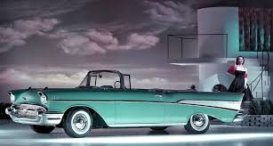

The Chevrolet Bel Air is an iconic American classic that represents the golden age of automotive design and culture. First introduced in 1950, the Bel Air quickly became a symbol of postwar optimism and the American dream, with its distinctive styling, chrome detailing, and tailfins. The 1955-1957 models, known as the “Tri-Five” Chevrolets, are particularly celebrated for their streamlined bodies, powerful V8 engines, and signature chrome accents, making them one of the most sought-after classic cars today. The Bel Air offered luxury and performance at an accessible price, which made it a popular choice among American families in the mid-20th century.
Inside, the Chevrolet Bel Air provided comfort and style, with spacious seating and upscale finishes that were advanced for its time. The dashboard and interior featured chrome accents and color-matched trims, emphasizing the car’s polished, elegant look. Buyers could choose from a variety of powerful engines, including the famous small-block V8, which gave the Bel Air impressive performance for its day. Over the years, the Bel Air has become a cultural icon, frequently seen in movies, TV shows, and car shows, where it symbolizes the style and spirit of 1950s America. Today, it remains highly collectible and celebrated as a quintessential classic, admired for its unique design and nostalgic charm.